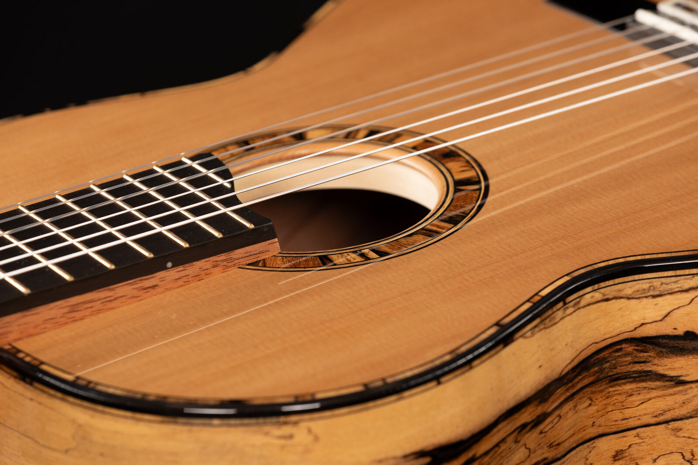
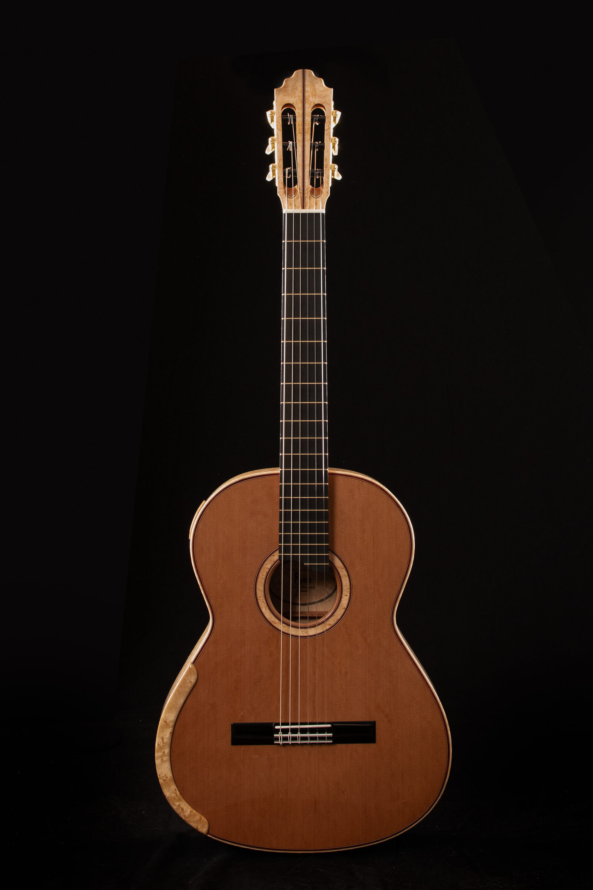
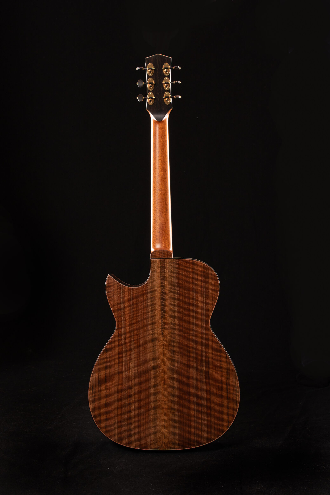
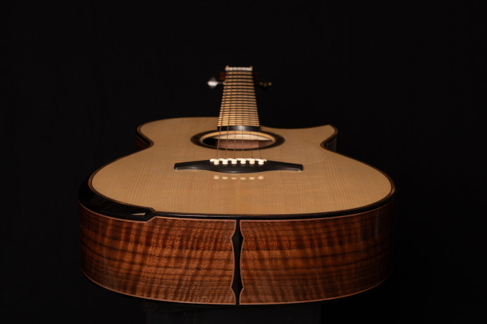
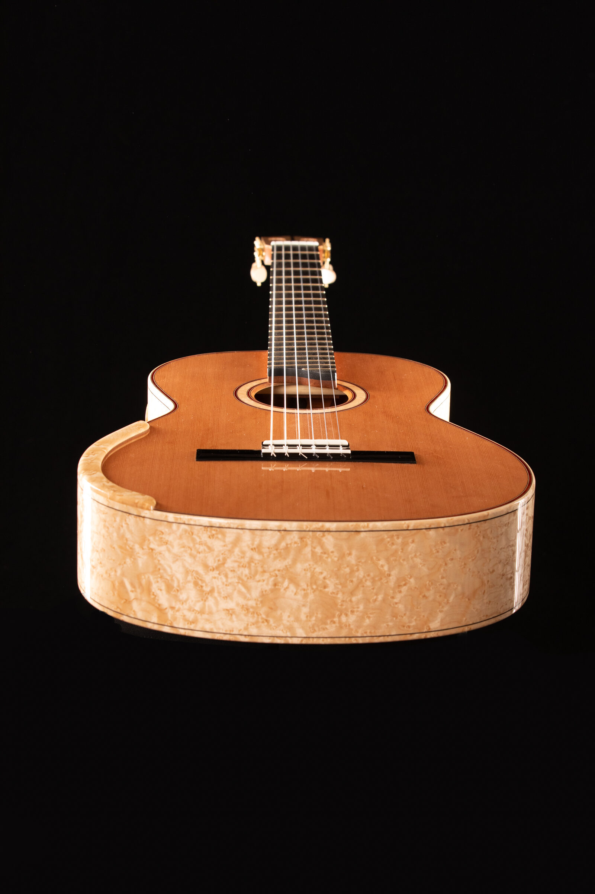
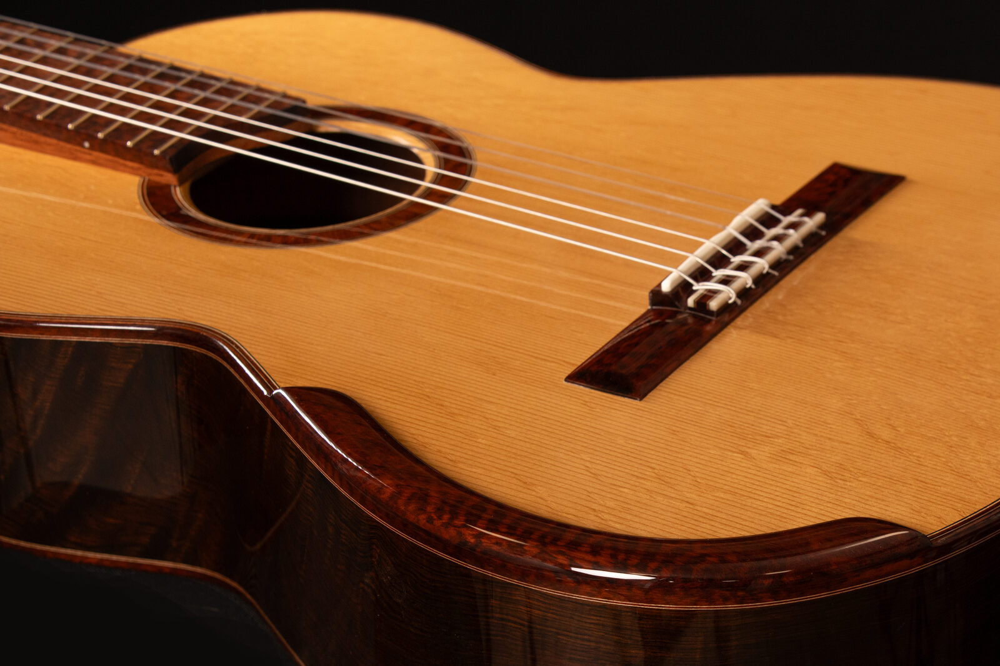
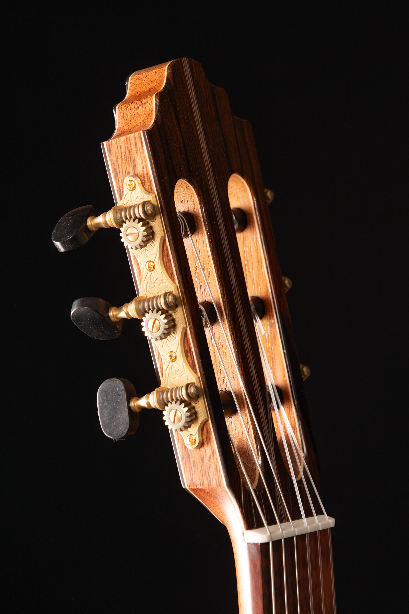
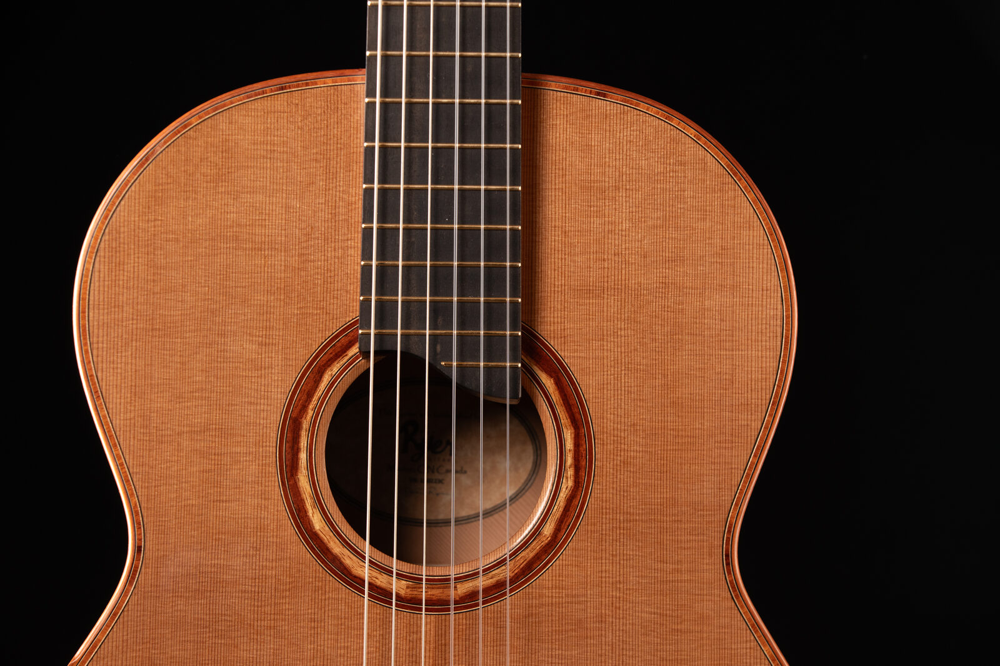

Meticulously handcrafted acoustic and classical guitars, built with uncompromising standards.
Madoc, OntarioI have always had a deep appreciation for fine woodworking, especially as it applies to musical instruments. In the late 1980s, I repaired stringed instruments for local music shops, and since the turn of the millennium I have dedicated myself to learning the art of crafting high quality acoustic and classical guitars — developing my own voice as a luthier through years of hands-on building. Early in that journey I had the good fortune of training with Sergei de Jonge and spending over two years working in his shop, an experience that helped shape my foundational technique.
I came to realize that there is no better way to live than to do what I have the passion for. Art and the craft of building something so beautifully majestic, rich in detail, technologically advanced and yet, so simple. The guitar, in all of its various forms, has been around for eons — so widely recognized and appreciated the world over — and yet, there's still so much to learn, so many nuances that make each guitar uniquely personal.
Whether it be a classical, flamenco or steel stringed instrument, each will be unique, designed and built according to the desires of the player. Together, we will build a meticulously handcrafted instrument using the finest tone woods and the very best techniques to ensure every client's experience exceeds their expectations. On occasion, Dave is also open to working one-on-one with serious students who wish to learn the craft — just reach out directly to discuss.
— David Ryer

Every Ryer guitar is meticulously hand crafted. Whether you are a seasoned veteran or just looking for a great sounding, high quality guitar, Dave is always up for talking shop.







Each instrument is designed and built according to the desires of the player. A 20% non-refundable deposit is required to confirm orders.